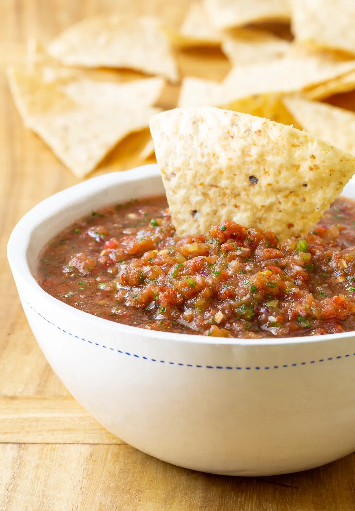

Scott's Salsa

Fresh Salsa
Sometimes salsa made with just fresh ingredients can come off with a shallow flavor… Lacking depth. Whereas, salsa made with canned ingredients alone can taste store-bought.
It is my belief that you need both fresh and canned ingredients to make the best homemade salsa recipe.
Ingredients
- Ripe Tomatoes
- Red Onion
- Garlic Cloves
- Jalapenos
- Cilantro
- Fresh Lime Juice
- Sugar
- Salt
- Ground Cumin
Steps
- Prepare the veggies and add to your food processor along with lime juice and seasonings. Chop to a fine grade.
- Next, add the canned crushed San Marzano tomatoes and green chiles and puree again until almost smooth.
- Add more cumin and salt to taste, and refrigerate until chilled and ready to enjoy.
Back Home